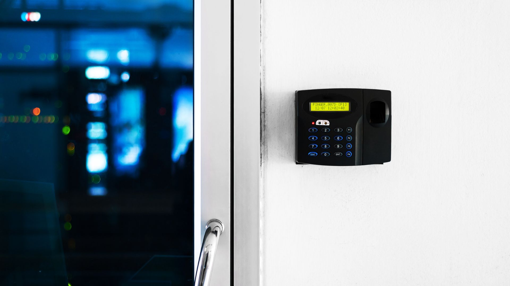

Managing employee attendance in a workplace, no matter the size, is no small task, as we’re sure you would agree. Things have greatly improved through the years in the way companies are now tracking employee attendance with the help of evolving technology, but there are still quite a few issues that business owners, managers, and HR face in this space.
Attendance tracking is not just a formality in the workplace. It has a deep-rooted purpose to understand your employees’ behaviour. Right from ensuring compliance with leave policies, measuring tardiness & absenteeism, to their overall compensation calculation, a smart attendance system can help you save countless man-hours.
And it’s not just management which benefits from these systems, your employees will thank you for having a smooth, automated, and easy-to-use attendance tracking system for them.
Let’s take a look at why these systems matter and how they can benefit everyone in the workplace.
Top benefits for Employers, Managers, and HR:
More efficient, more accurate
These smart attendance systems are a game-changer for employers everywhere. These systems minimise human error to almost zero and completely eliminate unethical practices such as proxy or buddy punching (where an employee can clock in for another by entering their pass-code or signing on the register). All of this while maintaining highly accurate employee attendance records. This data is stored in the system and can be easily retrieved by management for tracking, payroll, and leave calculation in real-time.
Real-time monitoring and reporting
Advanced employee attendance tracking systems like the VIGIL PROX allow very easy real-time data transfer via TCP/IP protocol, making it more streamlined for management to monitor employee attendance remotely. VIGIL PROX’s contactless smart card reader works seamlessly with online data transfers, providing accurate time management and supporting both indoor and outdoor installations. By allowing remote access to attendance data, it becomes easier for managers to track attendance trends and address any issues, such as absenteeism, early departures, or late arrivals.
Flexibility for different work environments
As more companies adopt flexible, remote, and hybrid working policies, cloud-based attendance systems are becoming more of a ‘need’ than simply a ‘want’. Smart systems that support remote check-ins allow employees to log their work hours from different locations, reducing friction for those who may not be working at the office every day. This setup also enables companies to manage workforce attendance for field employees or those at different sites, creating a more inclusive full-scope attendance management system.
Top Benefits For Employees:
A simpler, easier process
Gone are the days of manually logging time in a register or swiping a punch card. This is the era of forward-thinking tech. And having such technology in your workplace creates a positive impression among your workforce. If your employees can use biometrics (such as fingerprint) or smart cards to register their attendance in seconds, why rely on outdated methods?

This ease of use saves a lot of time and minimises wait times during the peak hours (reporting time and leaving time), making it especially helpful in large organisations and busy or fast-moving work environments such as factories and warehouses.
One popular solution in this space, FP 900, offers both fingerprint and smart card authentication, providing employees with quick, touchless access to work premises. With a powerful optical fingerprint sensor, FP 900 ensures accurate and secure attendance tracking. Its robust memory can store up to 10,000 user templates, so employees’ information is safely stored and easily accessible.
Much better privacy and security
Biometric systems offer a more secure way to handle access and attendance, as they rely on unique identifiers like fingerprints rather than passcodes or badges, which can be easily lost or shared. This adds a layer of security that protects employees’ data and contributes to overall workplace safety. Employees as well as employers can rest easy by knowing that only authorised individuals can access certain areas, which can be particularly important in industries dealing with sensitive information, such as finance, research, and IT.
Supporting regulatory compliance and transparency
Under the Employees' Provident Funds and Miscellaneous Provisions Act, 1952, employers In India are required to maintain records of salary and attendance for a minimum period of five years.
Our country’s labour laws also require businesses to maintain accurate attendance records. Smart attendance systems help ensure compliance by automatically generating time logs, which are valuable during audits or legal checks. These detailed reports also aid in building transparency in employee attendance, thereby creating a culture of trust between employees and employers.
With the FP 900 and VIGIL PROX systems, companies can effortlessly maintain records, monitor working hours, and generate reports with ease. FP 900, for instance, features customisable Wiegand formats, allowing companies to tailor the data output to meet specific regulatory or internal needs.
A Future-Ready Investment for Companies
As Indian workplaces continue to evolve, smart employee attendance systems are a valuable investment. They simplify HR processes, reduce errors, and enhance workplace security, all while creating a more streamlined experience for employees. For companies, smart attendance systems like VIGIL PROX and FP 900 will not only improve productivity but also adapt easily to future changes in workforce management.